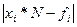

Números Aleatorios Uniformemente Distribuidos
Introducción
En el lenguaje técnico informal se habla de “números aleatorios” (sin precisar distribución) a números que tienen la misma probabilidad de aparecer en un intervalo dado. Realmente cuando se habla así, se está hablando de una muestra de una variable aleatoria con distribución uniforme en ese intervalo. El intervalo en cuestión no es lo más importante, porque a partir de una sucesión o muestra de números aleatorios con distribución uniforme en [0,1] es posible conseguir una muestra de números aleatorios con distribución uniforme en cualquier intervalo [a, b], simplemente por una transformación lineal. Lo interesante es que también a partir de una muestra de números aleatorios con distribución uniforme en [0,1] se pueden conseguir muestras de números aleatorios con cualquier distribución especificada. Es por eso que nuestro tratamiento del tema comienza estudiando la generación de números aleatorios con distribución uniforme y en particular, con distribución uniforme en [0,1].
Los llamados “generadores de números aleatorios” realmente producen una sucesión de números que por diversas razones no pueden ser exactamente aleatorios y de hecho, el proceso de generación puede reproducirse en ciclo o en momentos diferentes si se parten de las mismas condiciones iniciales. Por esta razón resulta importante conocer las mejores técnicas para generar números aleatorios y conocer también un conjunto de técnicas para chequear la validez de tales números.
Ideas básicas. Números pseudoaleatorios con distribución uniforme. Ciclo del generador. Semilla inicial.
Se llaman “generadores” digitales de números aleatorios a los “procedimientos o algoritmos” que permiten generar números aleatorios con una distribución especificada. Hablamos en esta conferencia, de números con distribución uniforme en [0,1]. Los “generadores” digitales de números aleatorios utilizan un conjunto de cálculos más o menos complicados para la generación de una secuencia de números. Dada un conjunto de condiciones iniciales, tales generadores producirán siempre la misma secuencia de números. Por otra parte, cuando se generan números en una computadora, los cálculos están limitados esencialmente por una aritmética finita (que puede ser variable, pero acotada en última instancia por las capacidades de la computadora). Esto hace necesariamente que las secuencias de tales números caigan en un “ciclo” o “período” determinado en última instancia por la cantidad posible de números a generar. Por último, para que un método de generación sea suficientemente eficiente, debe basar la generación de cada número en los anteriores y por tanto es recursivo. Ello hace necesario establecer una “semilla” o conjunto de condiciones iniciales. Esta “semilla” a su vez debería ser aleatoria.
Por todas estas razones, la sucesión de números generada no es realmente una muestra de una variable aleatoria con distribución uniforme en [0,1]. Decimos que estos números son pseudoaleatorios. Los paquetes de software de Estadística y Simulación contienen en general generadores de números aleatorios bastante bien probado; pero no todos de la misma potencia. Por ejemplo, el generador de números aleatorios del paquete Mathematica supera en mucho al del MathLab, al del SPSS y al del Excel. Para muchos fines los generadores de estos paquetes pueden ser suficientes; pero para otros no y puede ser necesario implementar un generador específico en un programa o sistema de simulación que se esté elaborando.
Así, resulta de interés de una parte, conocer un conjunto de pruebas que permitan validar un generador de números aleatorios. Y por otra resulta también importante para el Cibernético conocer los algoritmos más potentes de generación de tales números para su eventual implementación.
A manera de ejemplo simple, y para ilustrar posteriormente las pruebas de aleatoriedad, citamos uno de los primeros generadores o procedimientos de generación elaborado por J. von Neumann en 1946 y conocido hoy método del medio-cuadrático (mid-square method). Por supuesto que apenas 5 años después había sido ampliamente estudiado y criticado. Hoy en día tiene solamente interés histórico y metodológico.
El método usa como próximo número aleatorio los dígitos centrales del cuadrado del número precedente. Supongamos por ejemplo que queremos generar números aleatorios (entre 0 y 1) con cuatro cifras decimales de precisión. Trabajaremos realmente con el número entero de 4 dígitos y finalmente, añadiremos un punto a la izquierda del primer dígito para considerarlo en el intervalo [0,1]. Suponga que el “primer número” o semilla es 3187. Entonces, para generar el siguiente número se calcula (3187)2 = 10156969, y se toman los dígitos centrales de dicho número, esto es 1569 (o 0.1569 si se lleva a [0,1]). Para el siguiente, calculamos (1569)2= 2461761 y resulta el siguiente número de la secuencia: 4617 (observe que convenimos en dejar siempre dos cifras a la derecha).
La crítica más fuerte a este procedimiento es que tiende a tener períodos o ciclos muy cortos. Más adelante en esta misma conferencia, se extiende esta sucesión como material de estudio de los test de aleatoriedad. En la clase práctica se extenderá a 100 números y se observará entonces el ciclo. La longitud del ciclo depende naturalmente de la semilla, pero incluso está demostrado que cuando se logran sucesiones con períodos bastante largos, ellos difícilmente pasan las pruebas estadísticas de aleatoriedad.
Antes de ver otros generadores mucho más modernos y eficientes, veamos los test para validar la aleatoriedad, que son en definitiva tests de hipótesis para medir ajuste de un conjunto de datos a la distribución uniforme.
Tests para validar sucesiones de números pseudoaleatorios con distribución uniforme
Entre los tests para probar el ajuste de un conjunto de números a la distribución uniforme (digamos entre 0 y 1) mencionamos en primer lugar el Test de Kolmogorov-Smirnov que para esta distribución resulta particularmente simple. En esencia el test de Kolmogorov-Smirnov parte de dividir la muestra en subintervalos:
calcular la frecuencia fi de valores observados en cada intervalo [0, xi] y compararla con la frecuencia esperada bajo el supuesto de la distribución uniforme. La frecuencia esperada se obtiene en general a partir de la función de distribución que se prueba, multiplicando la probabilidad de que el valor se encuentre en el intervalo [0, xi] por el volumen N de la muestra. En el caso de la distribución uniforme, resulta xi*N, donde. El estadístico de Kolmogorov-Smirnov se construye a partir del valor máximo de

El cálculo de la máxima diferencia absoluta y su significación aparecen implementados en paquetes como el SPSS. El inconveniente del test de Kolmogorov-Smirnov es que requiere de una cadena de números aleatorios relativamente grande, para reducir la probabilidad de aceptar erróneamente la aleatoriedad. Hoy en día, esta desventaja puede aliviarse utilizando pruebas exactas al menos cuando los volúmenes de muestra son pequeños, o el método de Monte Carlo cuando no son tan pequeños; pero este último conlleva en sí un proceso de generación aleatorio de muestras que debe estar previamente validado también.
En el texto [1] hay descritos con cierto detalle varios test alternativos. Hablemos en particular del test de series, el test de distancia cuadrática y el test de “gap”.
Test de series
Esta prueba se basa en aplicar el test Chi-cuadrado a pares de números sucesivos. En la sucesión de números supuestamente aleatorio se asocia el primero y el segundo, el tercero y el cuarto, el quinto y el sexto, y así sucesivamente. Si la computadora o el algoritmo generador, trabaja con una aritmética finita, puede generar solamente un número finito de números diferentes. Por ejemplo, si tales números están limitados por la longitud de la palabra, digamos 16 bits en una aritmética binaria, entonces solamente pueden ser representados 65536 números enteros (sin signo).
Si en general, la cantidad máxima de números representables es “d”, entonces, el número posible de pares consecutivos es “d2” y si la distribución de la sucesión es realmente uniforme, cada uno de estos pares tiene una probabilidad de aparecer igual a 1/d2. Con esta frecuencia esperada y con las observadas en la muestra, se conforma un test chi-cuadrado, aplicable también con paquetes.
Aunque parece simple, esta prueba tiene inconvenientes, especialmente si el número “d” es grande, como ocurre fácilmente hoy en día, por el crecimiento del hardware y el software (recuérdese por ejemplo que el paquete Mathematica es capaz de trabajar con una aritmética de cualquier nivel de precisión). De hecho para generar “n” pares independientes deben generarse por lo menos “2n” números aleatorios y para aplicar el test chi-cuadrado “n” tiene que ser por lo menos “5d2” para que la frecuencia esperada en cada combinación no sea menor que 5. El test pudiera generalizarse para “tríos”, “cuartetos” etc., en lugar de, o además de, “pares” consecutivos; pero la dificultad anterior se acentúa. Por último, cuando se genera con bastante rigor una sucesión de números pseudoaleatorios, no resulta difícil que “apruebe” este test, de manera que no es “tan fuerte”; pero como resulta fácil de implementar, puede servir para rechazar la aleatoriedad en sucesiones grandes de números aleatorios con pocas cifras de precisión y no muy rigurosamente construidas.
Test de distancias cuadráticas
Este test trabaja también con cuartetos de números aleatorios sucesivos; interpretando cada par como un punto en el rectángulo [0,1] x [0,1]. Así, los números aleatorios r1, r2, r3, r4 se interpretan como la pareja de puntos (r1, r2) (r3, r4) y tiene sentido calcular la distancia cuadrática entre tales pares:
Con cálculo de probabilidades no resulta difícil demostrar que si los números están distribuidos aleatoriamente, D2 tiene una distribución conocida y dada por:
Utilizando esta distribución, se puede estimar las probabilidades o frecuencias esperadas de valores de D2 en ciertos intervalos que determinen una partición de [0,2] en n subintervalos, digamos:
y comparar entonces las frecuencias esperadas pi*n con las frecuencias fi de valores observados de D2, utilizando un test Chi-cuadrado.
Este test es mucho más potente que el test serial, esto es, el es capaz de detectar más fácilmente violaciones de la uniformidad en la distribución de la sucesión y por tanto, sus conclusiones sobre aceptar aleatoriedad son más fidedignas.
Tests de “gaps”
Este tipo de tests se basa en la longitud de un “gap” (gap puede ser traducido como "vacío" o "espacio intermedio"), medido en número de ocurrencias de un evento, entre la aparición de un resultado particular y la próxima aparición del mismo resultado. Se habla de tests de “gap” en plural porque la misma idea puede aplicarse en varios sentidos [1]. Una de ellas es la siguiente:
Suponga que el conjunto de números aleatorios es tratado como una secuencia de dígitos (descontando el 0 y el punto decimal que preceden a cada número). Por ejemplo, si la sucesión de números generados fuera
|
0.3187 |
0.1569 |
0.4617 |
0.3166 |
0.0235 |
0.0552 |
0.3047 |
0.2842 |
|
0.0769 |
0.5913 |
0.9635 |
0.8332 |
0.4222 |
0.8252 |
0.0955 |
0.9120 |
|
0.1744 |
0.0415 |
0.1722 |
0.9652 |
0.1611 |
0.5953 |
0.4382 |
0.2019 |
|
0.0763 |
0.5281 |
0.8840 |
0.1456 |
0.1199 |
0.4376 |
0.1493 |
0.2290 |
|
0.2441 |
0.9584 |
0.8530 |
0.7609 |
0.8968 |
0.4250 |
0.0625 |
0.3960 |
entonces, la interpretaríamos como la sucesión de dígitos:
318715694617316602350552304728420769...3960
Ahora en esta técnica se escoge un dígito probador, digamos por ejemplo el 2, que es el dígito más frecuente en la serie. Consideramos un "gap" el espacio entre la aparición de un 2 y el próximo y como longitud del "gap" el número de dígitos intermedios. Entonces resultan 21 “gaps” cuyas longitudes son: 5, 4, 2, 15, 1, 0, 0, 1, 1, 6, 11, 0, 3, 11, 0, 9, 21, 0, 2, 20, y 4. La longitud “k” de un gap equivale a la aparición de "k dígitos diferentes de 2" y a continuación un 2. Por tanto tiene probabilidad (0.1) (0.9)k. Entonces se pueden comparar frecuencias observadas con esperadas, de ser necesario uniendo valores consecutivos de k para no tener frecuencias esperadas menores que 5 y utilizar un test Chi-cuadrado. Por ejemplo:
|
Longitud de un “gap” |
0, 1 o 2 |
3, 4, 5 o 6 |
Mayor que 6 |
|
Probabilidad teórica |
0.1+0.09+0.081 |
0.0729+0.06561+ 0.059049+0.0531441 |
0.4783 |
|
Frecuencia esperada (Probabilidad*21) |
5.691 |
5.265 |
10.044 |
|
Frecuencia observada |
10 |
5 |
6 |
La significación del test es el "peor caso para aceptar aleatoriedad" es 0.077, aun mayor que 0.05. Por tanto con estos resultados no podemos descartar la aleatoriedad de los números con probabilidad de error menor que el 5%; pero si resulta sospechosa porque podemos descartarla con probabilidad de error menor que el 10% (la significación del test en el "peor caso para rechazar aleatoriedad" es 0.92, menor que 0.10). Si se incrementa el número de datos en la serie, probablemente se rechace la aleatoriedad; pero lo cierto es que con estos datos, dicha serie "pasa" esta prueba.
Como se verá en la Clase Práctica, esta serie ha sido obtenida con el método generador del medio-cuadrático de Von Neumann y es de esperar que no responda realmente a una distribución uniforme. De hecho, si se repiten los cálculos de generación antes de 100 números aparece un ciclo; pero con 40 datos esta falta de aleatoriedad no es tan fácilmente apreciable. La misma serie de 40 números pasaría (aunque dudosamente también) el test de Kolmogorov Smirnov, e incluso, este test no detecta violación de la aleatoriedad si se generan hasta 100 números en la muestra. El test de series sería inadmisible porque la significación del chi-cuadrado estaría enormemente exagerada por el reducido número de casos y para obtener suficientes habría que extender la sucesión excesivamente, cuando ya sería obvio el ciclo. La misma serie pasaría también el test de las distancias cuadráticas, como se verá en la clase práctica.
El test de "gaps" es, en general, uno de los más potentes para validar la distribución uniforme; pero el propio ejemplo demuestra también que no es "tan bueno". Knuth defiende el llamado “test espectral” como el “más discriminante” hasta entonces formulado (téngase presente que [2] fue escrito en 1969). Tal test, enunciado por Coveyou y MacPherson mide la independencia de conjuntos de “n” números adyacentes y sería capaz de detectar la violación de la uniformidad en esta serie. Su descripción en [2] incluye un algoritmo para implementarlo. En la Clase Práctica veremos como con un criterio muy simple podremos descartar la aleatoriedad de esta serie, incluso, desde los primeros 20 datos.
Métodos de generación basados en congruencias. Generadores congruenciales multiplicativos, aditivos y mixtos
Discutimos a continuación los algoritmos más conocidos para generar números con distribución uniforme en [0,1]. Se llaman métodos congruenciales a los métodos iterativos que basan en la generación en una fórmula recurrente del tipo:
donde son seleccionados previamente los 4 números no negativos:
m (el módulo de congruencia)
a (el multiplicador)
c (el incremento, que puede ser mayor o igual a 0)
x0 (la semilla o valor inicial)
con la restricción en principio de que m debe ser estrictamente mayor que a y c. Realmente, la sucesión obtenida así es de números enteros, pero se convierten en números en el intervalo [0,1] añadiendo simplemente un punto a la izquierda del primer dígito.
Con independencia de la selección de los parámetros, tales números siempre forman un ciclo pues a lo sumo se recorren las m clases módulo m; así el ciclo es siempre menor o igual a m. Por otra parte debe estar claro que en principio, siempre es posible obtener una combinación de parámetros que genere una secuencia de ciclo máximo m. De hecho, la sucesión trivial que se obtiene con a=c=1: x0, x0+1, x0+2, m-1, 0, 1,2,…, x0-1, x0, x0+1,… tiene un ciclo m, pero es trivial porque está lejos de tener la aleatoriedad deseada. Además si m no es primo, es posible conseguir también por esta vía sucesiones con ciclo k donde k divide a m. Otras muchas situaciones son posibles poniendo valores no triviales de a y c y debe estar claro que selecciones no adecuadas de estos parámetros pueden producir ciclos mucho más reducidos. Por ejemplo, si se selecciona x0=3, a=7; c=3; y m=10, resulta la sucesión: 3, 4, 1, 0, 3, 4, 1,0,…que tiene un ciclo sólo de 4 números.
Generadores congruenciales multiplicativos y mixtos
Podrían llamarse generadores “puramente aditivos”, a aquellos en los que se selecciona a=1, pero ya comprendemos porqué ellos son triviales y reservaremos el nombre de generadores aditivos para otro tipo de generadores congruenciales que analizaremos posteriormente.
Se llaman generadores “multiplicativos” a aquellos en los que se selecciona c=0 y generadores “mixtos” a aquellos en los que a es diferente de 1 y c es diferente de cero. La teoría de los generadores congruenciales multiplicativos y mixtos discute las propiedades de la sucesión de números generados por la fórmula de congruencia con diferentes valores de los parámetros valores m, a, c y x0 y pretende emitir recomendaciones para la mejor selección de los mismos, esto es para alcanzar una distribución cercana a la uniforme y lograr ciclos grandes.
La elección de los parámetros m, c, a, y x0 en los generadores mixtos.
El parámetro m debe ser suficientemente grande para posibilitar ciclos largos (hoy en día las operaciones modulares incluso por números grandes no son difíciles computacionalmente). En todo caso la cota superior de m la impone la longitud de palabra con que trabaja la máquina, la precisión del programa generador, o el número de cifras decimales con que queremos a los números aleatorios. Si cualquiera de estos parámetros determina que el número máximo de números aleatorios generables es d, no vale la pena m mayor que este valor. Si el valor de d se determina por ejemplo, por la longitud de palabra binaria, d=2w (con w=16, 24, 32, 48, 64...), la teoría demuestra que la elección m=2w puede producir en particular ciclos mucho más cortos. Entonces se ha recomendado tradicionalmente, tomar:
· m=2w-1, por ejemplo m=231, o
· m=2e con e<w, por ejemplo m=225
Cualquiera que sea el límite d en general puede ser una buena idea tomar m cercano a d; pero m<d.
El incremento c debe cumplir en primer lugar que sea menor que m; y debe ser estrictamente positivo en los modelos mixtos. En este caso, una condición necesaria para que el ciclo alcance a ser m, es que c sea primo con m, esto es que el máximo común divisor de c y m sea 1. Hay resultados de Greenberger sobre la acotación de las correlaciones de números aleatorios sucesivos en dependencia de los valores de c, m, y también de a; pero estos resultados no parecen ser muy útiles como criterios prácticos para elegir c.
En resumen, en un modelo mixto tómese
· c de manera que 0<c<m y MCD(c,m)=1
La elección de a es quizás la cuestión más interesante en aras de obtener el máximo período o ciclo de la sucesión de números generados. Aparte de que a debe ser estrictamente positivo y menor que m, si se parte de c diferente de cero, puede demostrarse que el ciclo alcanza el valor máximo potencial igual a m si y solo si se cumplen las tres condiciones siguientes:
1. c es relativamente primo con m, como antes se estableció
2. a-1 es múltiplo de cada primo que divide a m
3. a-1 es múltiplo además de 4, si 4 divide a m.
Así, por ejemplo, se recomiendan valores de a como los siguientes:
· si m= 2e y c es diferente de cero y primo con m, tomar a-1= 2k con 2£k<e, por ejemplo m=231, y a=215+1
pero Knuth [2] discute argumentos para usar multiplicadores más complicados, por ejemplo:
· con m= 235 , usar a= 223 +214+22+1.
La selección de x0 en un generador mixto no es tan importante si ya se ha garantizado que el ciclo alcanza a ser m con los criterios anteriores. En definitiva se van a recorrer todos los posibles números. En generaciones de diferentes conjunto de series, como se hace en simulación, un buen hábito puede ser utilizar como semilla inicial el número final generado en la corrida anterior; pero como en otros generadores que dependen de una semilla inicial, en la comprobación de programas puede ser útil fijar esta semilla durante varias corridas.
La elección de los parámetros m, a, y x0 en los generadores multiplicativos.
En algunos libros se comenta que hay una tendencia a utilizar c=0, esto es, a usar generadores multiplicativos dentro de la categoría de generadores congruenciales, en lugar de mixtos, porque según dichos autores son "más rápidos, menos complicados y probablemente tan buenos como estos últimos". Pero cuando se selecciona c=0, hay que seleccionar con más cuidado m, a y x0 porque también se puede generar un ciclo corto, como se verá a continuación.
Si c=0, la fórmula generadora puede expresarse sin recurrencia así:
Entonces, una condición necesaria y suficiente para que no haya ciclos de longitud menor que m es que no se repitan los valores, esto es que:
para cualesquiera i, j, entre 0 y m-1
Cuando m no es primo esta condición se viola muy fácilmente porque en el anillo de los enteros módulo m hay divisores de cero Por ejemplo:
Si m=24 y se toma a=5 y x0=3, se obtiene la sucesión 3, 15, 3, 15, ... porque 52=50 (mod 24). Análogamente, si se toma m=24, a=3 y x0=5, se obtiene la sucesión 5, 15, 21, 15, 21, porque 32=34 (mod 24).
Cuando m es primo, el anillo de los enteros módulo m es un cuerpo y no tiene divisores de cero, lo que facilita la elección adecuada de a y x0. En este caso se tiene que hay ciclos si y sólo si
para ciertos valores de i y j entre 0 y m-1.
Supongamos i>j. En tal caso, se tiene:
donde k=i-j
Como x0 y a son divisores de 0, resulta entonces que la única forma en que puede ocurrir esto es siendo
para alguna potencia k, 1£k<m-1
Por ejemplo, si m=23, y tomamos a=3 y x0=5, obtendremos un ciclo después de 11 números: 5, 15,... 17, 5, 15,.... porque 311=1 (mod 23). Si con el mismo valor de m, tomamos a=22 y x0=5, generamos un ciclo más corto: 5, 18, 5, 18,... porque 222=1 (mod 23). Sin embargo, si con el mismo valor de m, tomamos a=7 y x0=5, se evitan todos los problemas porque 7k¹1 (mod 23) para todo k=1, 2,3,...22. Claro que 722=1 (mod 23) y la longitud máxima es 22. En general, el máximo ciclo posible en un generador multiplicativo es m-1 porque ningún número debe resultar en 0 (mod m).
Por tanto en el generador multiplicativo, se recomienda, seleccionar m como un número primo, por ejemplo, el mayor primo menor que d (la máxima cantidad generable de números), y prestar atención a la selección de a de manera que

Entonces, con independencia de la selección de x0 se obtendrá el ciclo más largo posible de longitud m-1. La dificultad de este criterio es obvia, pues salvo la multiplicación por la semilla, el criterio exige prácticamente la generación de los m-1 números aleatorios para observar el ciclo. Los generadores "multiplicativos" no son entonces "más cómodos" que los mixtos.